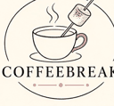

Coffeebreak Karaoke Mic
Your name
Paste lyrics or load a .lrc file
Starting…
Tip: use headphones or keep the phone away from the speaker.
No mics yet
On iPhone and iPad keep this app on screen.

Your name
Paste lyrics or load a .lrc file
Tip: use headphones or keep the phone away from the speaker.
No mics yet
On iPhone and iPad keep this app on screen.